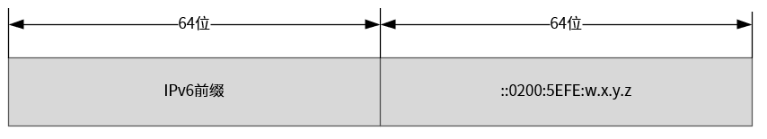
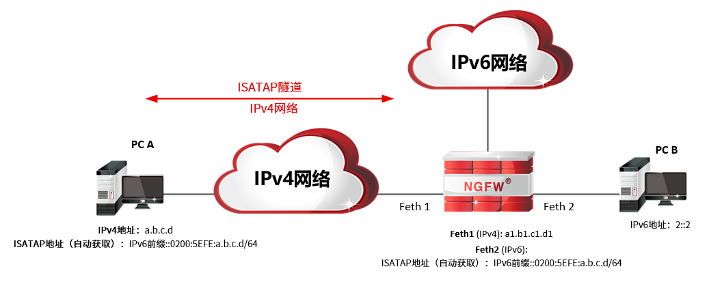
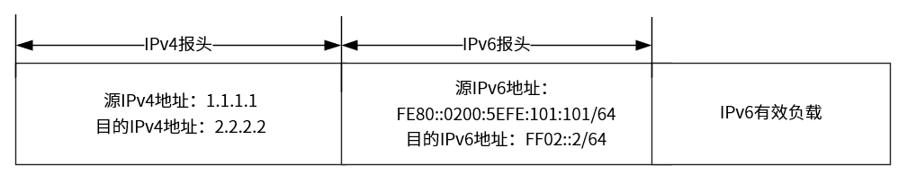
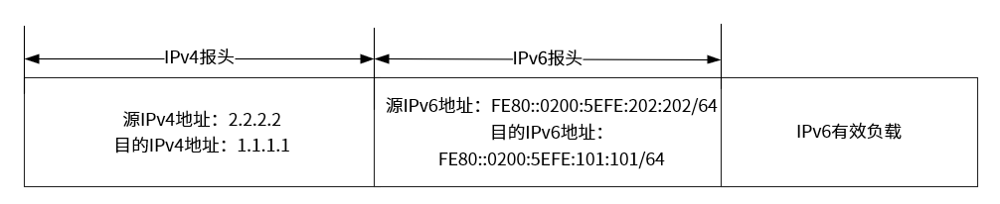
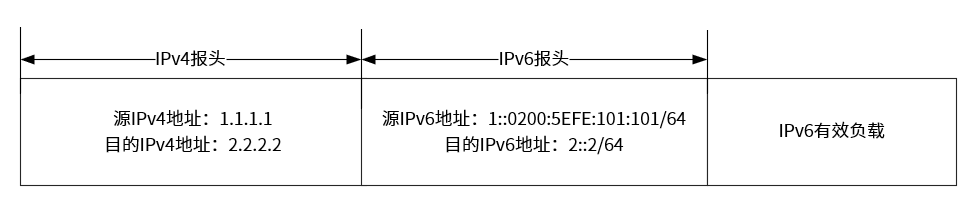
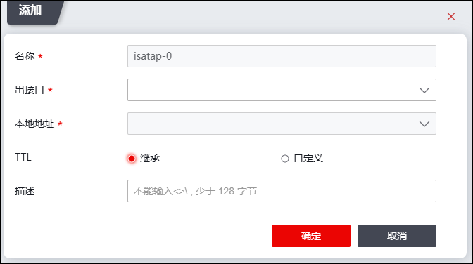
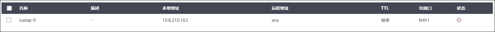
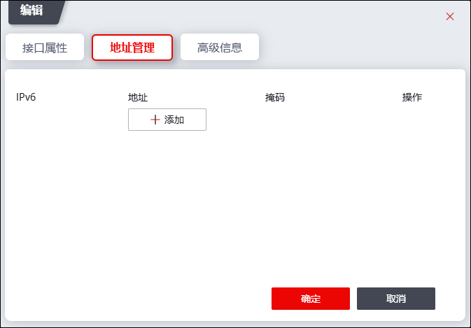
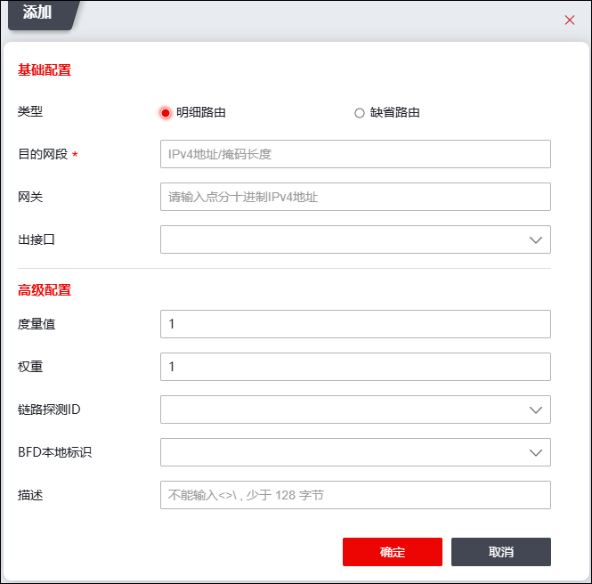

ISATAP (Intra-Site Automatic Tunnel Address Protocol)，是一种主机到主机、主机到路由器或路由器到主机的点到多点自动隧道技术（同一个隧道源端，可对应多个隧道目的端）。它为IPv6主机之间提供了跨越IPv4内部网络的互连，可以实现IPv4网络中的IPv6节点间的通信。一般来说，一条隧道需要有一个起点一个终点，而ISATAP隧道只需指定隧道起点，隧道另外一端会根据主机访问IPv6节点的需求自动加入。ISATAP隧道部署起来非常简单，不需要用户对现有网络做大规模的变更及设备升级，仅在当前网络中增加部署一台ISATAP路由设备，即可实现主机跨越IPv4网络访问IPv6资源时自动建立ISATAP隧道，通过ISATAP隧道访问IPv6资源。
ISATAP隧道的地址有特定的格式：

Ø主机64位前缀通过向ISATAP路由设备发送请求而获得，ISATAP路由设备使用分配的IPv6前缀
Ø0200:5EFE由IENA规定
Øw.x.y.z是单播IPv4地址，它嵌入到IPv6地址的最后32位，ISATAP隧道终点的加入根据该IPv4地址获取，具体为私网地址还是公网地址，由ISATAP隧道两端间的网络是私有网络还是公有网络决定
工作原理：

ØPC支持V4/V6双栈，FW(ISATAP路由设备)可部署在网络中任何位置，但PC和FW要求IPv4网络连通。
Ø在FW中配置ISATAP隧道，指定建立隧道的接口IPv4地址，此处假设为2.2.2.2(地址主要用于与隧道对端通信)。隧道创建后路由器会产生一个ISATAP隧道接口，并在接口上生成一个ipv6的本地链路地址 FE80::0200:5EFE:202:202。
Ø在主机PC_A中进行ISATAP隧道的配置：指定ISATAP路由设备(FW)的IPv4地址，启用ISATAP隧道,配置接口ipv4地址假设为1.1.1.1，配置完成后同样生成一个ISATAP隧道接口，并生成本地链路地址FE80::0200:5EFE:101:101。
Ø在FW(ISATAP路由设备)的ISATAP接口中配置IPv6单播地址，其前缀为1::/64，后64位为0200:5EFE:202:202，配置完成后开启无状态自动配置服务（操作详见 RADAD），以便FW能通告地址前缀1::/64，用于ISATAP主机自动生成自身的全局IPv6地址。
（1）双栈主机PC_A发送RS(Router Solicitation)请求IPv6前缀。因PC_A与FW之间为IPv4网络，此时需要进行IPv6 in IPv4封装，将报文发送给FW。

（2）FW响应RA(Router Advertisement)。因FW与PC_A之间为IPv4网络，此时需要进行IPv6 in IPv4封装，为PC_A响应IPv6网络前缀。

（3）PC_A获取全局IPv6地址。PC_A接收到FW响应的RA后，可获取前缀为1::/64，根据ISATAP地址生成规则，可获取全局IPv6地址1::0200:5EFE:0101:0101。
（4）PC_A访问PC_B。当PC_A主机与使用ipv6地址2::2/64的PC_B主机通信时，它会使用生成的全局ipv6地址1::0200:5EFE:0101:0101/64作为源地址，目的地址为目的主机使用的2::2/64，报文进入ISATAP隧道的处理流程后，在IPv6报文头前添加一层IPv4报文头的封装，封装的源地址为本端使用的ipv4地址1.1.1.1，目的地址为FW(ISATAP路由设备)的ipv4地址2.2.2.2，最后将封装的报文通过IPv4网络发送给FW。

（5）报文到达FW(ISATAP路由设备)后，FW发现目的地址是自己，解封装，去除外层的IPv4封装，根据报文中的IPv6地址信息将数据报文转发到PC_B，PC_B收到报文后进行响应，响应与请求处理流程相似，不再赘述。
配置步骤：
l主机配置ISATAP隧道
Ø以Win7为例：
netsh>int netsh>interface>ipv6 netsh>interface>ipv6>isatap netsh>interface>ipv6>isatap>set router 2.2.2.2 /*2.2.2.2为ISATAP路由设备(NGFW)IP地址*/ netsh>interface>ipv6>isatap>set state enabled netsh>interface>ipv6>isatap>exit
|
|---|
Ø以Linux为例：
isatapd -n tunnel0 -l eth1 -r 2.2.2.2 �Cd
参数说明： -n：隧道名称 -l：发送接口名称 -r：isatap路由器的ipv4地址 -d：后台运行
|
|---|
lNGFW配置ISATAP隧道
| 步骤1 | 选择 ，进入ISATAP隧道配置界面。 |
| 步骤2 | 添加ISATAP隧道。 |
1）点击『添加』，弹出界面如下图所示。

各项参数的具体说明如下表所示。
参数 |
说明 |
|---|---|
名称 |
在下拉框选择隧道名称，不同的ISATAP隧道需选择不同的隧道名称，隧道名称以“isatap-”开头，例如“isatap-0”。最多支持128条ISATAP隧道。 |
出接口 |
在下拉框中选择隧道出接口，对于需经该隧道处理的报文从指定隧道出接口转发出去。 |
本地地址 |
设置与隧道对端可通信的本端接口地址。 |
TTL |
设置ISATAP隧道本端设备与对端设备可经过的最大路由器数目。可选项：继承、自定义。 Ø继承：TTL值继承原数据包IP报头中的TTL值。 Ø自定义：TTL值自定义，取值范围为1-255。 |
描述 |
输入ISATAP隧道简单的描述信息。 |
2）点击【确定】按钮完成ISATAP隧道的创建。新添加的ISATAP隧道会显示在界面上，如下图所示。

|
²ISATAP隧道创建完成后，会生成一个与隧道名称一致的ISATAP虚接口。如隧道名称命为isatap-0，则ISATAP虚接口为isatap-0。 |

| 步骤3 | 勾选ISATAP隧道列表，点击列表上方的“编辑”，在弹出的界面中配置隧道接口IPv6地址，地址格式需遵循ISATAP地址格式要求。 |

| 步骤4 | 选择 ，进入RADVD配置界面，配置IPv6地址前缀，并开启RADVD功能开关，操作详见 RADVD。 |
| 步骤5 | 选择 ，进入静态路由配置界面，配置ISATAP隧道路由。 |

主机通过ISATAP隧道访问IPv6资源的数据报文到NGFW中时，NGFW发现目的IPv4地址为自己，解除封装，然后根据报文里面的IPv6地址将报文发送到真正的目的端。响应报文经过NGFW时，NGFW会根据ISATAP隧道路由，将响应通过指定的ISATAP隧道传输，关于ISATAP隧道路由的配置具体请参见 静态路由。